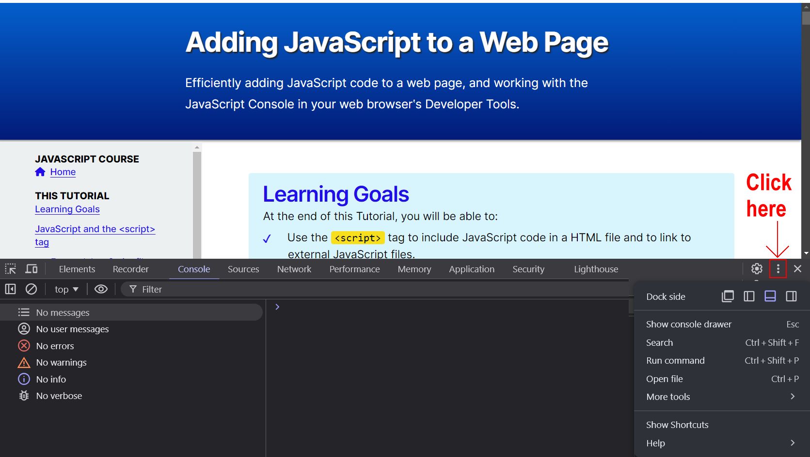
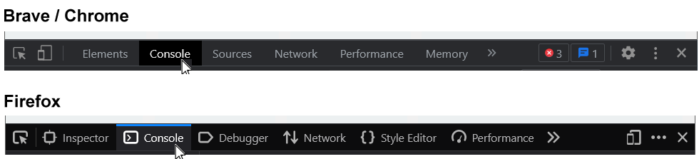
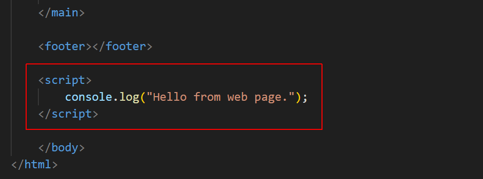
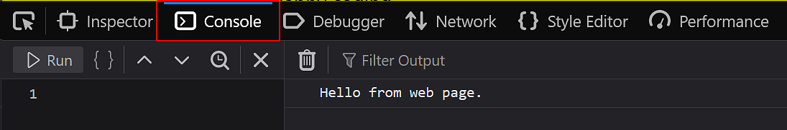
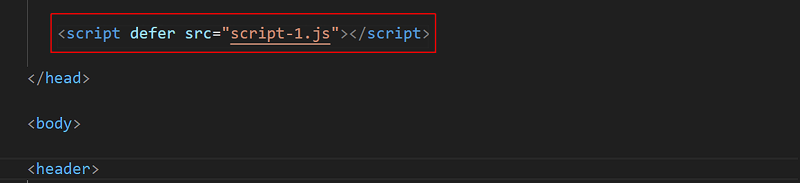
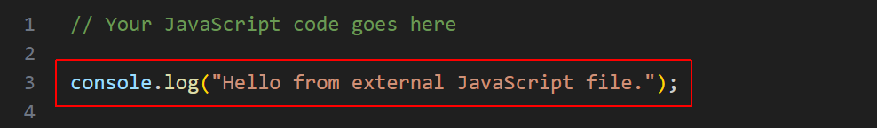
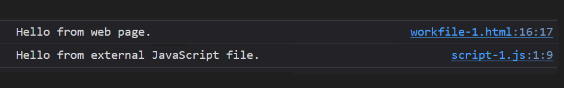

Learning Goals
At the end of this Tutorial, you will be able to:
- Use the <script> tag to include JavaScript code in an HTML file and to link to external JavaScript files.
- Ensure that JavaScript code is non-blocking — it does not delay the loading of the HTML content.
- Ensure that JavaScript code does not attempt to access the HTML content until the HTML has been fully loaded.
- Open and use the JavaScript Console in your web browser’s DevTools.
Create a new folder on your computer named javascript and inside it create a sub-folder named exercises.
Download a new workfile on your computer as described at the link below.
📄 Adding JavaScript: Exercises
Download this empty JavaScript file named script.js to your javascript/exercises folder.
JavaScript and the <script> tag
The two most efficient ways to add JavaScript to a web page are as follows:
If your JS code is in the HTML file, add it to the bottom before </body> tag. The code loads after web page has been fully loaded.
Add external JS file(s) to the <head> with defer attribute. The files load ‘in the background’ in the order placed and only run after web page is fully loaded.
Both methods are:
- Non-blocking: Loading the JS code does not delay rendering of the HTML. So users experience faster page load time. And you should see fewer audit messages like this on Google"s PageSpeed Insights site.

- Access to HTML elements: The JS code will try to access elements in the HTML file only after the file is loaded. So you should not see errors like this in the JavaScript Console.

External JavaScript files
Here are the benefits of using external JavaScript files:
- They separate HTML and JavaScript code.
- They make the HTML and JavaScript easier to read and maintain
- On multi-page websites, cached JavaScript files can speed up page loads.
Do not include <script> tags in external JavaScript files.
Working with your web browser DevTools
Your web browser’s Developer Tools (also known as DevTools) includes a JavaScript Console. To display this:
- Windows (all browsers): Press Ctrl + Shift + I
- Mac (Safari browser): Press ⌘ + ⌥ + I.
Changing the DevTools position
To position or ‘dock’ the DevTools window:
- Open the DevTools window.
- Near the top-right of the DevTools window, click the vertical ellipses (...) icon. 
- Click the docking position you want for the DevTools window.
Changing the DevTools font size
To change the font size in the DevTools window, select the window, and then press the Ctrl key followed by the plus (+) or minus (-) key. To reset, press Ctrl and 0.
Working with the JavaScript Console
Of the various tabs shown across the top of DevTools window, click Console to display the JavaScript Console.
You can use the Console to display or ‘log’ information as part of your JavaScript coding process.
- Any coding errors will appear in the Console, along with the line number and a short explanatory message.
- In your code, you can use console.log() statements to inspect the values of variables and properties of objects.
In summary, the JavaScript Console provides an environment similar to a terminal shell interface to try out JavaScript code in real-time.
Installing the Live Server Extension
You will find it helpful when working with JavaScript to install the popular VS Code Extension is called Live Server.
Live Server launches a web server on your computer with a live reload feature. Every time you save your HTML, CSS or JavaScript files, you'll instantly see the changes reflected in the web browser. You'll be much faster at spotting errors and it's much easier to do some quick experiments with your code.
Follow these steps to install Live Server in VS Code.
-
At the bottom-left of the VS Code screen, click the
Gears icon.

- Visual Studio opens a new window named Extensions at the left of your screen. Typically, it will show a list of currently popular Extensions.
-
In the Extensions search box, type Live Server.

-
You can drag the right border of the Extension window further to
the right, to see the full text of the search results.

- Click the Install button under the first search result.
-
The top part of your VS Code window should now look similar to
that below.
 Live Server is now successfully installed. You do not need to
restart VS Code.
Live Server is now successfully installed. You do not need to
restart VS Code.
-
To close the Live Server Extensions window, click the close (X)
icon at the top.

- To close the Extensions search box, click the large Extensions icon in the Activity Bar at the left of the VS Code screen.
To start Live Server on your computer, click the icon near the
bottom-right of the VS Code window. This will open the current web
page in a new tab of your default web browser.
 To close the extension, click the icon a second time.
To close the extension, click the icon a second time.
JavaScript and AI tools
There are lots of AI tools to help you on your JavaScript learning journey. For example:
With these services, you will obtain better, more focused results if you begin by entering a persona such as the following:
You are a skilled and experienced JavaScript developer and instructor. You have
a special skill in explaining modern ES5/ES6 JavaScript concepts, features and best
practices. Please respond to my questions and requests with basic,
step-by-step directions supported by sample code snippets.
Please display "read" to acknowledge. Thank you.In VS Code, you could install the following two extensions:
- GitHub Copilot
- GitHub Copilot Chat
Adding JavaScript to HTML of a web page
Follow these steps:
- Open the adding-javascript.html web page. Just before the closing </body> tag, enter the following JavaScript code snippet:
The bottom of your web page should now look as follows: <script> console.log("Hello from web page."); </script> - Save and reload the web page. You should see the following message in your browser"s JavaScript Console: 
✅ You have now added some JavaScript code directly to the HTML of a web page.
Adding an external JavaScript file to a web page
Follow these steps:
- In your adding-javascript.html workfile, add the following line just before the closing </head> tag.
Your web page should now look as follows: <script defer src="script.js"></script> - Open your script.js file and add the following new line:
Your JavaScript file should now look as follows. console.log("Hello from external JavaScript file."); - Save the JavaScript file and then reload your web page. You should see the following message in the JavaScript Console: 
✅ You have now linked your web page to an external JavaScript file .